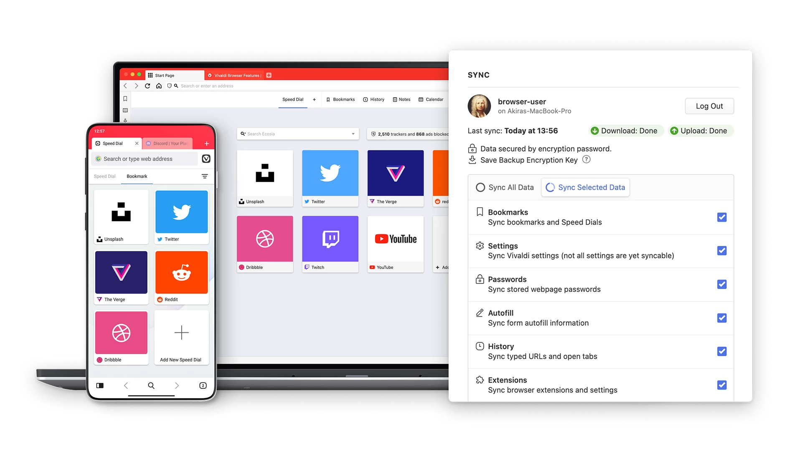

Introduction
Vivaldi Browser is a powerful and customizable web browsing solution that caters to the needs of both developers and everyday users. With multi-platform support, seamless synchronization, and an array of productivity-enhancing features, Vivaldi empowers its users to optimize their browsing experience across devices.
Multi-Platform Support and Google Chrome Extension Compatibility
Available for Mobile, Linux, Windows, and Mac, Vivaldi Browser ensures a consistent browsing experience across different platforms. This allows users to seamlessly transition between their devices without sacrificing functionality or customization options. Moreover, Vivaldi's PC version supports Google Chrome extensions, providing access to a vast library of add-ons and tools designed to enhance productivity and user experience.
Dark Mode for Enhanced Visibility
Vivaldi Browser understands the importance of visual comfort and offers a built-in dark mode for both its PC and mobile versions. Dark mode is ideal for users who prefer a visually appealing and less eye-straining browsing experience. With just a few clicks, users can switch to dark mode, enhancing readability and reducing eye fatigue in low-light environments.
Synchronized Bookmarks and Speed Dials
Vivaldi Browser streamlines the process of organizing and accessing your favorite websites. It offers seamless synchronization of bookmarks and speed dials across all your devices. This means that whether you're using Vivaldi on your PC or mobile device, you can quickly access your saved bookmarks and speed dials, ensuring a consistent browsing experience wherever you go.
External Download Manager Integration
Vivaldi Browser goes the extra mile to provide users with flexibility and control. It offers the option to download files directly through an external download manager on both PC and mobile devices. This allows users to leverage the capabilities of their preferred download manager, customizing their download experience according to their own preferences and requirements.
How to Download Vivaldi
To download Vivaldi, simply visit the official Vivaldi website (vivaldi.com) or search for "Vivaldi Browser" in your device's app store. From there, follow the instructions for your specific platform, and within minutes you'll have access to a powerful and highly customizable browsing experience.
To Wrap It Up
For developers, Vivaldi Browser's support for Google Chrome extensions and its emphasis on customization make it an excellent choice. The ability to synchronize bookmarks and speed dials across all devices ensures seamless productivity, while the integration with external download managers adds an extra layer of convenience. With Vivaldi Browser, developers can enjoy a feature-rich and customizable browsing experience that truly puts their needs first.
Download Vivaldi today and unleash the power of customization and productivity as you navigate the web with ease.